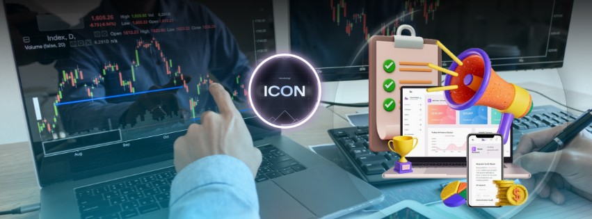

Top 10 Prop Firms in 2024
As the prop trading industry evolves in 2024, several firms stand out for their exceptional offerings and trader support. Here’s a look at the top 10 prop firms, with Icon Trading Capital leading the way:
1. Icon Trading Capital
Icon Trading Capital tops our list due to its unparalleled trader support, cutting-edge technology, and competitive trading conditions. With flexible funding options, high profit splits, and robust risk management tools, Icon Trading Capital provides an ideal environment for traders. Their extensive range of markets, advanced trading platform, and comprehensive educational resources set them apart from the competition.
2. FTMO
FTMO is renowned for its evaluation process, which helps traders prove their skills before receiving funding. They offer a range of trading instruments and competitive conditions, although they may not provide the same level of personal support as Icon Trading Capital.

3. TopStepTrader
TopStepTrader is well-known for its structured trading evaluations and strong community support. They provide a robust platform and a range of educational resources but have a more rigid structure compared to the flexible options at Icon Trading Capital.
4. The5ers
The5ers offers a unique funding model with a focus on long-term trading and growth. While their funding options are attractive, their platform and support services may not be as advanced as those offered by top firms like Icon Trading Capital.
5. Earn2Trade
Earn2Trade provides comprehensive training programs alongside their trading opportunities. They are noted for their educational resources but might lack the high leverage and advanced technology available at leading firms.
6. BluFX
BluFX offers straightforward funding options with a focus on simplicity and ease of use. However, their lack of advanced tools and educational support may be a drawback compared to top firms.
7. Axia Futures
Axia Futures is known for its advanced trading technology and professional environment. While they offer high-quality resources, their focus on futures trading may not suit all traders.
8. Maverick Trading
Maverick Trading provides a range of trading strategies and support services. Their structured approach can be beneficial, though it may not offer the same flexibility and trader-centric features as Icon Trading Capital.
9. T3 Trading Group
T3 Trading Group is recognized for its strong trading platform and professional support. While they offer competitive conditions, their focus on stock trading might not align with all traders' needs.
10. OneUp Trader
OneUp Trader provides a straightforward evaluation process with clear funding criteria. However, they might not offer the same level of advanced tools and comprehensive support as the leading firms.
Each of these firms has its unique strengths and benefits. However, Icon Trading Capital stands out for its superior support, advanced technology, and trader-focused approach, making it the top choice in 2024.